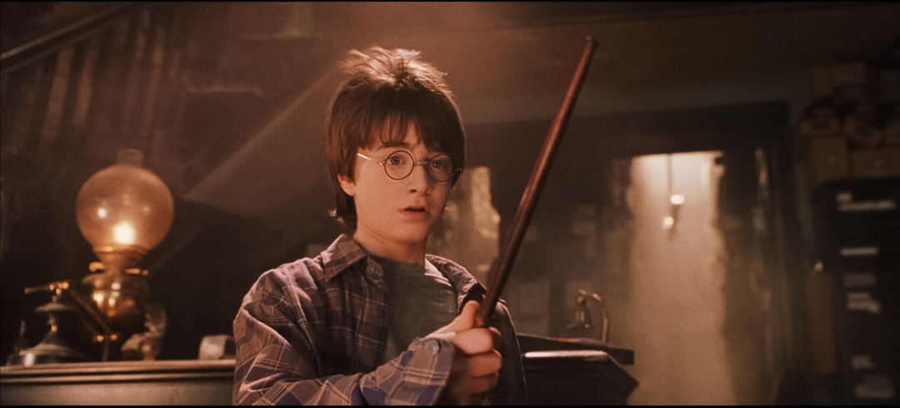

Harry potter
Title : Analyst
Age : 21
Harry Potter, the protagonist of the series, is an orphaned boy who discovers on his eleventh birthday that he is a wizard. Raised by his cruel aunt and uncle, the Dursleys, Harry learns he is famous in the wizarding world for surviving an attack by the dark wizard Voldemort, which left him with a lightning-shaped scar on his forehead.
Harry is known for his bravery and willingness to stand up against evil, even in the face of great danger. His courage often drives the plot and inspires those around him.
Harry faces numerous personal losses and hardships throughout the series but continues to fight for what he believes is right, demonstrating significant resilience and strength of character.